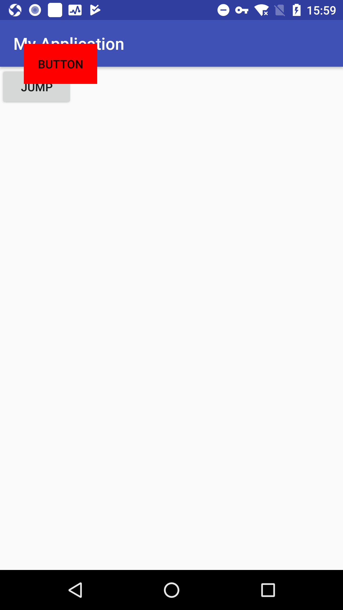

window表示一个窗口的概念，这里不是windows操作系统哦！在日常开发中直接接触window的机会并不多，但是在某些特殊的时候我们需要在桌面上显示类似悬浮窗的东西，那么这个就需要使用window了。window是一个抽象类，他的具体实现是photoWindow，创建一个window是很简单的事情，只需要通过windowManager即可完成。windowManager是外界访问window的入口，window的具体实现位于windowManagerService中，windowManager和WindowManagerService的交互是一个IPC过程，android中所有的视图都是通过window来呈现的，不管是activity。dialog。还是toast，他们的视图实际上都是附加在window上面的，因此window是View的直接管理者，从第四章View的事件分发机制也可以看出来，单击事件是有window传递给decorView的，然后再有decorView传递给我们的View，就连activity的设置视图的方法setContentView在底层也是通过window来完成的。
window和wondowManager
为了分析window的工作机制，我们需要先了解如何使用windowManager添加一个window。下面的代码展示了如何通过windowManger添加window的过程，是不是很简单呢
如果是android8.0及以上，需要加权限1
<uses-permission android:name="android.permission.SYSTEM_ALERT_WINDOW"/>
不然会报错：permission denied for window type 20101
2
3
4
5
6
7
8
9
10
11
12
13
14
15
16
17
18
19
20
21
22
23
24
25
26
27
28
29
30
31
32
33
34
35
36
37
38
39
40
41
42
43
44
45
46
47
48
49
50
51
52
53
54
55
56
57
58
59
60
61
62
63
64
65public class MainActivity extends AppCompatActivity {
private View bt;
int OVERLAY_PERMISSION_CODE = 1000;
@Override
protected void onCreate(Bundle savedInstanceState) {
super.onCreate(savedInstanceState);
setContentView(R.layout.activity_main);
bt = findViewById(R.id.bt);
}
@Override
public void onWindowFocusChanged(boolean hasFocus) {
super.onWindowFocusChanged(hasFocus);
addOverlay();
}
public void addOverlay() {
if (Build.VERSION.SDK_INT >= Build.VERSION_CODES.M) {
if (!Settings.canDrawOverlays(this)) {
Intent intent = new Intent(Settings.ACTION_MANAGE_OVERLAY_PERMISSION, Uri.parse("package:" + getPackageName()));
startActivityForResult(intent, OVERLAY_PERMISSION_CODE);
}else{
Button mFloatButton = new Button(this);
mFloatButton.setText("button");
mFloatButton.setBackgroundColor(Color.RED);
WindowManager.LayoutParams layoutParams = new WindowManager.LayoutParams(WindowManager.LayoutParams.WRAP_CONTENT, WindowManager.LayoutParams.WRAP_CONTENT, 0, 0, PixelFormat.TRANSPARENT);
layoutParams.flags = WindowManager.LayoutParams.FLAG_NOT_TOUCH_MODAL | WindowManager.LayoutParams.FLAG_NOT_FOCUSABLE | WindowManager.LayoutParams.FLAG_SHOW_WHEN_LOCKED;
layoutParams.gravity = Gravity.LEFT | Gravity.TOP;
layoutParams.width = WindowManager.LayoutParams.WRAP_CONTENT;
layoutParams.height = WindowManager.LayoutParams.WRAP_CONTENT;
layoutParams.x = 100;
layoutParams.y = 100;
layoutParams.type = WindowManager.LayoutParams.TYPE_APPLICATION_OVERLAY;
getWindowManager().addView(mFloatButton, layoutParams);
}
}
}
@RequiresApi(api = Build.VERSION_CODES.M)
@Override
protected void onActivityResult(int requestCode, int resultCode, Intent data) {
super.onActivityResult(requestCode, resultCode, data);
if (requestCode == OVERLAY_PERMISSION_CODE) {
if (Settings.canDrawOverlays(this)) {
Button mFloatButton = new Button(this);
mFloatButton.setText("button");
WindowManager.LayoutParams layoutParams = new WindowManager.LayoutParams(WindowManager.LayoutParams.WRAP_CONTENT, WindowManager.LayoutParams.WRAP_CONTENT, 0, 0, PixelFormat.TRANSPARENT);
layoutParams.flags = WindowManager.LayoutParams.FLAG_NOT_TOUCH_MODAL | WindowManager.LayoutParams.FLAG_NOT_FOCUSABLE | WindowManager.LayoutParams.FLAG_SHOW_WHEN_LOCKED;
layoutParams.gravity = Gravity.LEFT | Gravity.TOP;
layoutParams.width = WindowManager.LayoutParams.WRAP_CONTENT;
layoutParams.height = WindowManager.LayoutParams.WRAP_CONTENT;
layoutParams.x = 100;
layoutParams.y = 100;
layoutParams.type = WindowManager.LayoutParams.TYPE_APPLICATION_OVERLAY;
getWindowManager().addView(mFloatButton, layoutParams);
}
}
}
}

这里列举一下比较常用的flags属性
- FLAT_NOT_FOCUSABLE
表示window不需要焦点，也不需要接收各种输入时间，此标记会同时启用FLAG_NOT_TOUCH_MODAL，最终会将事件直接传递给下层具有焦点的window - FLAG_NOT_TOUCH_MODAL
此模式下，系统会将当前window区域以外的单机事件传递给底层的window，当前window区域以内的单击事件则自己处理，这个标记很重要，一般来说都需要开启，否则其他window无法接收到单击事件 - FLAG_SHOW_WHEN_LOCKED
开启此模式可以让window显示在锁屏桌面上
Type参数表示window的类型，window有三种类型，分别是应用window，子window和系统window。应用类window对应着一个activity，子window不能单独存在，他需要衣服在特定的父window中，比如常见的一些dialog就是一个子window。系统window是需要声明权限才能创建的window，比如toast和系统状态栏都是系统window。
window是分层的，每个window都有对应的z-ordered，层级大的会覆盖在层级晓得window的上面，这个和html的z-index的概念是完全一致的。在三类window中，应用window的层级范围是1-99，子window的层级范围是1000-9999，系统window的层级范围是2000-2999，这些层级范围对应着windowManager.layoutParams的type参数，如果想要window位于所有window的最顶层，那么采用较大的层数即可，很显然系统window的层级是最大的，而且系统层级有很多只，一般我们选用 TYPE_SYSTEM_OVERLAY或者TYPE_SYSTEM_ERROR,如果采用TYPE_SYSTEM_ERROR，只需要为type之地当这个层级就可以mLayoutParams.type=layoutParams.TYPE_SYSTEM_ERROR，同时声明权限1
<uses-permission android:name="android.permission.SYSTEM_ALERT_WINDOW"/>
因为系统类型的window是需要权限检查的，如果不在AndroidManifest中添加权限，会提示申请权限失败
windowManager所提供的功能很简单，常用的只有三个方法，即添加View、更新View和删除View。这三个方法定义在Viewmanager中，而WindowManager继承ViewManager1
2
3
4
5
6
7
8
9
10
11
12
13
14
15
16public interface ViewManager
{
/**
* Assign the passed LayoutParams to the passed View and add the view to the window.
* <p>Throws {@link android.view.WindowManager.BadTokenException} for certain programming
* errors, such as adding a second view to a window without removing the first view.
* <p>Throws {@link android.view.WindowManager.InvalidDisplayException} if the window is on a
* secondary {@link Display} and the specified display can't be found
* (see {@link android.app.Presentation}).
* @param view The view to be added to this window.
* @param params The LayoutParams to assign to view.
*/
public void addView(View view, ViewGroup.LayoutParams params);
public void updateViewLayout(View view, ViewGroup.LayoutParams params);
public void removeView(View view);
}
对于开发者来说，windowManager常用的就这三个功能而已，但是这三个功能已经足够我们使用了，他可以创建一个window并向其添加View，还可以更新window中的View，如果想要删除一个window，只需要删除他里面的View就可以。由此看来，windowManager操作window过程更像是在操作window中的view。我们时常见到那种可以拖动的window效果，其实是很好实现的，只需要根据手机的位置来指定layoutParams中的x和y就可以改变window的位置，首先给View设置onTouchListener，在ontouch中不断更新就可以1
2
3
4
5
6
7
8
9
10
11
12
13
14
15
16
17
18
19
20
21
22
23
24
25
26
27
28final Button mFloatButton = new Button(this);
mFloatButton.setText("button");
mFloatButton.setBackgroundColor(Color.RED);
final WindowManager.LayoutParams layoutParams = new WindowManager.LayoutParams(WindowManager.LayoutParams.WRAP_CONTENT, WindowManager.LayoutParams.WRAP_CONTENT, 0, 0, PixelFormat.TRANSPARENT);
layoutParams.flags = WindowManager.LayoutParams.FLAG_NOT_TOUCH_MODAL | WindowManager.LayoutParams.FLAG_NOT_FOCUSABLE | WindowManager.LayoutParams.FLAG_SHOW_WHEN_LOCKED;
layoutParams.gravity = Gravity.LEFT | Gravity.TOP;
layoutParams.width = WindowManager.LayoutParams.WRAP_CONTENT;
layoutParams.height = WindowManager.LayoutParams.WRAP_CONTENT;
layoutParams.x = 100;
layoutParams.y = 100;
layoutParams.type = WindowManager.LayoutParams.TYPE_APPLICATION_OVERLAY;
mFloatButton.setOnTouchListener(new View.OnTouchListener() {
@Override
public boolean onTouch(View v, MotionEvent event) {
float rawX = event.getRawX();
float rawY = event.getRawY();
switch (event.getAction()) {
case MotionEvent.ACTION_MOVE:
layoutParams.x= (int) rawX;
layoutParams.y= (int) rawY;
getWindowManager().updateViewLayout(mFloatButton, layoutParams);
break;
}
return false;
}
});
getWindowManager().addView(mFloatButton, layoutParams);
window的内部机制
window是一个抽象的概念，每一个window都对应着一个view和一个ViewRootImpl，window和View通过ViewRootImpl来建立联系，因此window并不是实际存在的，他是以View的形式存在的，这一点从windowManager的定义可以看出来，他提供了三个方法addview，updateViewLayout和removeView都是针对View的，这说明View是window存在的尸体。在实际使用过程中无法访问window，对window的访问过程必须公国windowmanager。为了分析window的颞部机制，这里从window的添加，删除以及更新说起
window的添加过程
window的添加过程需要通过windowManager的addView来实现，windowManager是一个接口，他的真正实现是windowManagerImpl类，在windowManagerInpl中window的三大操作如下:这里移除了一些代码1
2
3
4
5
6
7
8
9
10
11
12
13
14
15
16
17
18
19
20
21
22
23
24public final class WindowManagerImpl implements WindowManager {
private final WindowManagerGlobal mGlobal = WindowManagerGlobal.getInstance();
private final Context mContext;
private final Window mParentWindow;
@Override
public void addView(@NonNull View view, @NonNull ViewGroup.LayoutParams params) {
applyDefaultToken(params);
mGlobal.addView(view, params, mContext.getDisplay(), mParentWindow);
}
@Override
public void updateViewLayout(@NonNull View view, @NonNull ViewGroup.LayoutParams params) {
applyDefaultToken(params);
mGlobal.updateViewLayout(view, params);
}
@Override
public void removeView(View view) {
mGlobal.removeView(view, false);
}
}
从这里可以看出windowMangerImpl并没有直接实现window的三大操作，而是全部交给了WindowManagerGlobal，WindowManagerGlobal用工厂方法向外界提供自己的实例
1 | public void addView(View view, ViewGroup.LayoutParams params, |
一些比较重要的参数1
2
3
4
5private final ArrayList<View> mViews = new ArrayList<View>();
private final ArrayList<ViewRootImpl> mRoots = new ArrayList<ViewRootImpl>();
private final ArrayList<WindowManager.LayoutParams> mParams =
new ArrayList<WindowManager.LayoutParams>();
private final ArraySet<View> mDyingViews = new ArraySet<View>();
上面代码声明了mViews存储的是所有window所对应的View，mRoots存储的是所有window岁对应的ViewRootImol，mparams存储的是所有window所对应的布局参数，而mDyingView存储的是那些正在被删除的View对象，但是还没有完成删除的window对象，add通过如下方式将window的一系列对象添加到列表中1
2
3
4
5
6
root = new ViewRootImpl(view.getContext(), display);
view.setLayoutParams(wparams);
mViews.add(view);
mRoots.add(root);
mParams.add(wparams);
通过ViewRootImpl来更新界面并完成window的添加过程
这个不愁由ViewRootImol的setView方法来完成1
root.setView(view, wparams, panelParentView);
在setView的内部会通过requestLayout来完成异步刷新请求。在下面的代码中，scheduleTraversals实际是View的绘制入口
1 | @Override |
接着会通过windowsession最终完成windoow的添加过程。在下面代码中mWindowSession的类型是IWindowSession，他是一个Binder对象，真正的实现类是Session，也就是说window的添加过程其实是一次ipc调用
setView中的一行代码1
2
3
4res = mWindowSession.addToDisplay(mWindow, mSeq, mWindowAttributes,
getHostVisibility(), mDisplay.getDisplayId(),
mAttachInfo.mContentInsets, mAttachInfo.mStableInsets,
mAttachInfo.mOutsets, mInputChannel);
1 | public static IWindowSession getWindowSession() { |
session是这个包下面的package com.android.server.wm;
在session内部会通过windowManagerService来实现window的添加1
2
3
4
5
6
7@Override
public int addToDisplay(IWindow window, int seq, WindowManager.LayoutParams attrs,
int viewVisibility, int displayId, Rect outContentInsets, Rect outStableInsets,
Rect outOutsets, InputChannel outInputChannel) {
return mService.addWindow(this, window, seq, attrs, viewVisibility, displayId,
outContentInsets, outStableInsets, outOutsets, outInputChannel);
}
这样addwindow就交给windowManagerservice去处理了
window的删除过程
window的删除过程和添加过程是类似的，都是先通过windowmanagerImpl后在进一步通过windowManagerGlobal来实现，下面是windowManagerImpl来实现。下面是windowManagerGlobal的removeView的实现：1
2
3
4
5
6
7
8
9
10
11
12
13
14
15
16
17
18
public void removeView(View view, boolean immediate) {
if (view == null) {
throw new IllegalArgumentException("view must not be null");
}
synchronized (mLock) {
int index = findViewLocked(view, true);
View curView = mRoots.get(index).getView();
removeViewLocked(index, immediate);
if (curView == view) {
return;
}
throw new IllegalStateException("Calling with view " + view
+ " but the ViewAncestor is attached to " + curView);
}
}
removeView的逻辑很清晰，首先通过findViewLocked来查找待删除的View的索引，这个查找过程就是建立的数据遍历，然后在调用removeViewLocked来做进一步删除操作，如下所示1
2
3
4
5
6
7
8
9
10
11
12
13
14
15
16
17
18private void removeViewLocked(int index, boolean immediate) {
ViewRootImpl root = mRoots.get(index);
View view = root.getView();
if (view != null) {
InputMethodManager imm = InputMethodManager.getInstance();
if (imm != null) {
imm.windowDismissed(mViews.get(index).getWindowToken());
}
}
boolean deferred = root.die(immediate);
if (view != null) {
view.assignParent(null);
if (deferred) {
mDyingViews.add(view);
}
}
}
removeViewLocked是通过ViewRootImpl来完成删除操作的，在windowManager中提供了两种删除接口removeView和removeViewImmediate，他们分别表示异步删除和同步删除，其中removeViewImmediate使用起来需要特别注意，一般来说不需要使用此方法来删除window以避免意外的错误发生，这里主要说一下异步删除的情况，据图的操作由ViewRootImol的die方法来完成，在异步删除的情况下，die方法只是发送一个请求删除的消息后就立刻返回了，这个时候View并没有完成删除操作，所以最后会将其添加到mDyingViews中，mDyingViews表示待删除的View列表，ViewRootImpl的die方法如下所示1
2
3
4
5
6
7
8
9
10
11
12
13
14
15
16
17boolean die(boolean immediate) {
// Make sure we do execute immediately if we are in the middle of a traversal or the damage
// done by dispatchDetachedFromWindow will cause havoc on return.
if (immediate && !mIsInTraversal) {
doDie();
return false;
}
if (!mIsDrawing) {
destroyHardwareRenderer();
} else {
Log.e(mTag, "Attempting to destroy the window while drawing!\n" +
" window=" + this + ", title=" + mWindowAttributes.getTitle());
}
mHandler.sendEmptyMessage(MSG_DIE);
return true;
}
在爹方法内部只是做了简单的判断，如果是异步操作，那么久发送一个MSG_DIE的消息，ViewRootImpl中的handler会处理此消息并调用doDie方法，如果是同步删除（立即删除），那么久不需要发送消息，直接调用doDie方法，这就是这两种删除方式的区别，在dodie内部会调用dispatchDetachedFromWindow方法，真正删除View的逻辑在dispatchDetachedFromWindow方法内部实现，dispatchDetachedFromWindow方法主要做四件事
1 | void dispatchDetachedFromWindow() { |
- 垃圾回收相关工作，比如清除数据和消息，移除回调
- 通过Session的remove方法删除Window：mWindowSession.remove(mWindow)，这同样是一个IPC过程，最终会调用WindowManagerService的removeWindow方法
- 调用View的DispatchDetachedFromWindow方法，在内部会调用View的onDetachedFromWindow()以及onDetachedFromWindowInternal()。对于onDetachedFromWindow（）方法大家一定不陌生，当View从window上面移除的时候，这个方法就会被调用，这个方法内部做一些资源回收的工作，比如终止动画，停止线程等
- 调用WindowmanagerGlobal的doRemoveView方法刷新数据，包括mRoots，mParams以及mDyingViews，需要将当前Window所关联的这三个对象从列表中删除
window的更新过程
到这里，Window的产出过程已经分析完毕，现在来分析一下更新过程，还是要看WindowManagerGlobal的updateViewLayout方法，如下所示
1 |
|
updateViewlayout方法做的事情就比较简单了，首先他需要更新View的LayoutParams并替换掉老的LayoutParams，接着在更新ViewRootImol中的LayoutParams，这一步是通过ViewRootImpl的setlayoutParams方法来实现的，在ViewRootImpl中会通过scheduleTraversals方法来对View重新布局，包括测量、布局、重绘这三个过程。除了View本身的重绘以外，ViewRootImol还会通过WindowSession来更新Window的视图，这个过程最终是由WindowManagerService的relayoutWindow来实现的，同样他是一个IPC过程
window的创建过程
通过上面的分析可以看出，View是Android中视图的呈现方式，但是View并不能单独存在，他必须附着在Window这个抽象的概念上面，因此有视图的地方就有window。那些地方有视图呢？这个读者都比较清楚，Android中刻印提供视图的地方有Activity，dialog，toast初次之外，还有一些依托window而实现的视图，比如PopUpWIndow，菜单，他们也是视图，有视图的地方就有window，因此Activity、dialog、Toast等视图都对应着一个window。本节将分析的地方就有window的 创建过程，通过这个过程加深对window的进一步理解。
Activity的window创建过程
要分析activitty中的window的创建过程就必须了解activity的启动过程，详细的过程会在下一章介绍，这里先介绍一个大概过程，先有点印象。Activity的启动过程很复杂，最终会由ActivityThread中的performLaunchActivity来完成整个启动过程，在这个方法内部会通过类加载器创建activity的实例，并调用attach方法为其关联运行中所依赖的一系列上下文环境变量，代码如下所示
activityThread1
2
3
4
5
6
7
8
9
10
11
12
13
14
15
16
17
18
19
20
21
22
23
24
25
26
27
28
29
30
31
32
33
34
35
36
37
38
39
40
41
42
43
44
45
46
47
48
49
50
51
52
53
54
55
56
57
58
59
60
61
62
63
64
65
66
67
68
69
70
71
72
73
74
75
76
77
78
79
80
81
82
83
84
85
86
87
88
89
90
91
92
93
94
95
96
97
98
99
100
101
102
103
104
105
106
107
108
109
110
111
112
113
114
115
116
117
118
119
120
121
122
123
124
125
126
127
128
129
130
131
132
133
134
135
136
137
138
139
140
141
142private Activity performLaunchActivity(ActivityClientRecord r, Intent customIntent) {
// System.out.println("##### [" + System.currentTimeMillis() + "] ActivityThread.performLaunchActivity(" + r + ")");
ActivityInfo aInfo = r.activityInfo;
if (r.packageInfo == null) {
r.packageInfo = getPackageInfo(aInfo.applicationInfo, r.compatInfo,
Context.CONTEXT_INCLUDE_CODE);
}
ComponentName component = r.intent.getComponent();
if (component == null) {
component = r.intent.resolveActivity(
mInitialApplication.getPackageManager());
r.intent.setComponent(component);
}
if (r.activityInfo.targetActivity != null) {
component = new ComponentName(r.activityInfo.packageName,
r.activityInfo.targetActivity);
}
ContextImpl appContext = createBaseContextForActivity(r);
Activity activity = null;
try {
java.lang.ClassLoader cl = appContext.getClassLoader();
activity = mInstrumentation.newActivity(
cl, component.getClassName(), r.intent);
StrictMode.incrementExpectedActivityCount(activity.getClass());
r.intent.setExtrasClassLoader(cl);
r.intent.prepareToEnterProcess();
if (r.state != null) {
r.state.setClassLoader(cl);
}
} catch (Exception e) {
if (!mInstrumentation.onException(activity, e)) {
throw new RuntimeException(
"Unable to instantiate activity " + component
+ ": " + e.toString(), e);
}
}
try {
Application app = r.packageInfo.makeApplication(false, mInstrumentation);
if (localLOGV) Slog.v(TAG, "Performing launch of " + r);
if (localLOGV) Slog.v(
TAG, r + ": app=" + app
+ ", appName=" + app.getPackageName()
+ ", pkg=" + r.packageInfo.getPackageName()
+ ", comp=" + r.intent.getComponent().toShortString()
+ ", dir=" + r.packageInfo.getAppDir());
if (activity != null) {
CharSequence title = r.activityInfo.loadLabel(appContext.getPackageManager());
Configuration config = new Configuration(mCompatConfiguration);
if (r.overrideConfig != null) {
config.updateFrom(r.overrideConfig);
}
if (DEBUG_CONFIGURATION) Slog.v(TAG, "Launching activity "
+ r.activityInfo.name + " with config " + config);
Window window = null;
if (r.mPendingRemoveWindow != null && r.mPreserveWindow) {
window = r.mPendingRemoveWindow;
r.mPendingRemoveWindow = null;
r.mPendingRemoveWindowManager = null;
}
appContext.setOuterContext(activity);
activity.attach(appContext, this, getInstrumentation(), r.token,
r.ident, app, r.intent, r.activityInfo, title, r.parent,
r.embeddedID, r.lastNonConfigurationInstances, config,
r.referrer, r.voiceInteractor, window, r.configCallback);
if (customIntent != null) {
activity.mIntent = customIntent;
}
r.lastNonConfigurationInstances = null;
checkAndBlockForNetworkAccess();
activity.mStartedActivity = false;
int theme = r.activityInfo.getThemeResource();
if (theme != 0) {
activity.setTheme(theme);
}
activity.mCalled = false;
if (r.isPersistable()) {
mInstrumentation.callActivityOnCreate(activity, r.state, r.persistentState);
} else {
mInstrumentation.callActivityOnCreate(activity, r.state);
}
if (!activity.mCalled) {
throw new SuperNotCalledException(
"Activity " + r.intent.getComponent().toShortString() +
" did not call through to super.onCreate()");
}
r.activity = activity;
r.stopped = true;
if (!r.activity.mFinished) {
activity.performStart();
r.stopped = false;
}
if (!r.activity.mFinished) {
if (r.isPersistable()) {
if (r.state != null || r.persistentState != null) {
mInstrumentation.callActivityOnRestoreInstanceState(activity, r.state,
r.persistentState);
}
} else if (r.state != null) {
mInstrumentation.callActivityOnRestoreInstanceState(activity, r.state);
}
}
if (!r.activity.mFinished) {
activity.mCalled = false;
if (r.isPersistable()) {
mInstrumentation.callActivityOnPostCreate(activity, r.state,
r.persistentState);
} else {
mInstrumentation.callActivityOnPostCreate(activity, r.state);
}
if (!activity.mCalled) {
throw new SuperNotCalledException(
"Activity " + r.intent.getComponent().toShortString() +
" did not call through to super.onPostCreate()");
}
}
}
r.paused = true;
mActivities.put(r.token, r);
} catch (SuperNotCalledException e) {
throw e;
} catch (Exception e) {
if (!mInstrumentation.onException(activity, e)) {
throw new RuntimeException(
"Unable to start activity " + component
+ ": " + e.toString(), e);
}
}
return activity;
}
activity的attach方法1
2
3
4
5
6
7
8
9
10
11
12
13
14
15
16
17
18
19
20
21
22
23
24
25
26
27
28
29
30
31
32
33
34
35
36
37
38
39
40
41
42
43
44
45
46
47
48
49
50
51
52
53
54
55
56
57
58final void attach(Context context, ActivityThread aThread,
Instrumentation instr, IBinder token, int ident,
Application application, Intent intent, ActivityInfo info,
CharSequence title, Activity parent, String id,
NonConfigurationInstances lastNonConfigurationInstances,
Configuration config, String referrer, IVoiceInteractor voiceInteractor,
Window window, ActivityConfigCallback activityConfigCallback) {
attachBaseContext(context);
mFragments.attachHost(null /*parent*/);
mWindow = new PhoneWindow(this, window, activityConfigCallback);
mWindow.setWindowControllerCallback(this);
mWindow.setCallback(this);
mWindow.setOnWindowDismissedCallback(this);
mWindow.getLayoutInflater().setPrivateFactory(this);
if (info.softInputMode != WindowManager.LayoutParams.SOFT_INPUT_STATE_UNSPECIFIED) {
mWindow.setSoftInputMode(info.softInputMode);
}
if (info.uiOptions != 0) {
mWindow.setUiOptions(info.uiOptions);
}
mUiThread = Thread.currentThread();
mMainThread = aThread;
mInstrumentation = instr;
mToken = token;
mIdent = ident;
mApplication = application;
mIntent = intent;
mReferrer = referrer;
mComponent = intent.getComponent();
mActivityInfo = info;
mTitle = title;
mParent = parent;
mEmbeddedID = id;
mLastNonConfigurationInstances = lastNonConfigurationInstances;
if (voiceInteractor != null) {
if (lastNonConfigurationInstances != null) {
mVoiceInteractor = lastNonConfigurationInstances.voiceInteractor;
} else {
mVoiceInteractor = new VoiceInteractor(voiceInteractor, this, this,
Looper.myLooper());
}
}
mWindow.setWindowManager(
(WindowManager)context.getSystemService(Context.WINDOW_SERVICE),
mToken, mComponent.flattenToString(),
(info.flags & ActivityInfo.FLAG_HARDWARE_ACCELERATED) != 0);
if (mParent != null) {
mWindow.setContainer(mParent.getWindow());
}
mWindowManager = mWindow.getWindowManager();
mCurrentConfig = config;
mWindow.setColorMode(info.colorMode);
}
在Activity的attach方法里面，系统会创建activity所属的window对象并未其设置回调接口，window对象的创建是PhoneWindow。由于activity实现了window的callback接口，因此，当window接收到外界状态改变时会回调activity的方法，Callback接口中方法很多，但是有几个确实我们非常熟悉的，比如onAttachToWindow、onDetachedFromWindow、dispatchTouchEvent等等，代码如下所示
从activityy的setContentView的实现可以看出，Activity将具体实现交给了Window来处理，而Window的具体实现是phoneWindow，所以只需要看phonewindow的关联逻辑即可，PhoneWindow的setContentView方法大致遵循如下几个步骤
- 如果没有decorView就创建他
DecorView是一个FrameLayout。他是Activity中顶级的View，一般来说他包含内部标题栏和内部蓝，但是这个会随着主题的变化而改变，不管怎么样，内容栏是一定要存在的，并且内容栏固定具体的id，就是content，那么他完整的id是android.R.content。decorView的创建过程由installDecor方法来完成，在方法内部会通过generateDecor方法来直接创建DecorView，这个时候DecorView还是一个空白的FramLayout
看一下DecorView的构造方法1
2
3
4
5
6
7
8
9
10
11
12
13
14
15
16
17
18
19
20
21
22
23
24
25
26
27
28DecorView(Context context, int featureId, PhoneWindow window,
WindowManager.LayoutParams params) {
super(context);
mFeatureId = featureId;
mShowInterpolator = AnimationUtils.loadInterpolator(context,
android.R.interpolator.linear_out_slow_in);
mHideInterpolator = AnimationUtils.loadInterpolator(context,
android.R.interpolator.fast_out_linear_in);
mBarEnterExitDuration = context.getResources().getInteger(
R.integer.dock_enter_exit_duration);
mForceWindowDrawsStatusBarBackground = context.getResources().getBoolean(
R.bool.config_forceWindowDrawsStatusBarBackground)
&& context.getApplicationInfo().targetSdkVersion >= N;
mSemiTransparentStatusBarColor = context.getResources().getColor(
R.color.system_bar_background_semi_transparent, null /* theme */);
updateAvailableWidth();
setWindow(window);
updateLogTag(params);
mResizeShadowSize = context.getResources().getDimensionPixelSize(
R.dimen.resize_shadow_size);
initResizingPaints();
}
看一下phonewindow的setContentView这个方法
1 | @Override |
看一下他的generateLayout方法和installDecor方法
decorView的结构和系统版本以及主题都有关系
将View添加到decoordView的mContentParent中
这里setContentView方法会inflate，这个时候activity的布局就加载到decorView中了,他只是添加到mContentParent中，因此叫做setContentView
回调Activity的onContentChanged方法通知Activity视图已经发生改变
这个过程就更简单了，由于Activity实现了Window的Callback接口，这里表示Activity的布局已经被添加到DecorView的mContentParent中了，使其可以做相应的处理。Activity的onContentChanged方法是个空的实现，我们可以在子Activity中处理这个回调1
2
3
4final Callback cb = getCallback();
if (cb != null && !isDestroyed()) {
cb.onContentChanged();
}
经过了上面的三个步骤，到这里为止，decorView已经被创建并初始化完毕，activity的布局文件已经成功添加到了DecorView的mContentParent中，但是这个时候DecorView还没有被WindowManager正式添加到Window，这里需要正确的理解window的抽象概念，window跟多表示一种抽象功能的集合，虽然说早在Activity的attach方法中window就已经被创建了，但是这个时候由于decorView没有被windowManager识别，所以这个时候window无法提供具体的功能，因为他还无法识别外界传出的输入信息，。在activityThread的handleResumeActivity方法中，首先会调用activity的onResume，接着会调用activity的makeVisible，正是在makeVisible方法，decorView真正完成了添加和显示的过程，到这里，Activitty视图才能被用户看到
1 | void makeVisible() { |
dialog的window创建过程
dialog的window的创建过程和activity类似，有如下几个步骤
- 创建window
dialog中window的创建同样通过policyManager的makeNewWindow方法来完成，创建后的对象实际就是phoneWindow，这个过程和activity的window创建过程一致，这里就不详细说明了 - 初始化decorView并将dialog视图添加到decorView中
初始化dialog，这个过程和activity类似 - 将decorView添加到window中并显示
在dialog的show方法中，会通过windowmanager将decorView添加到window中显示
从上面三个步骤可以发现，dialog的window创建和activity的window创建过程很类似，二者几乎没有什么区别，当dialog被关闭是，他会通过windowmanager来移除decorView
普通的dialog有一个特殊之处就是必须采用activity的context，如果采用application的context，那么就会报错
提示如下1
token null is not for an application
这里信息很明确，是没有应用token所导致的，而应用token一般只有activity拥有，所以这里只需要activity作为context来显示对话框，另外，系统window比较特殊，他可以不需要token，因此在上面的例子，只需要指定对话框的window为系统类型就可以正常弹出对话框，在本章一开始就讲到，windowmanager。layoutParams中的type表示window的类型，而系统window的层级范围是2000-2999，这些成绩范围就对应着type参数，系统window的层级有很多值3，对于本利来说，可以选用TYPE_SYSTEM_OVERLAY来指定对话框的类型为系统window类型
1 | Dialog dialog |
然后别忘忘记了在androidManifest中声明权限从而可以使用系统window
1 | <uses-permission android:name="android.permission.SYSTEM_ALERT_WINDOW"/> |
Toast的window创建过程
toast和dialog不同，他的工作过程就稍微复杂一点，首先toast也是基于window来实现的，但是由于toast具有定时取消这一个功能，所以系统采用handler。在toast的内部由拉令中IPC过程，第一类是Toast访问NotificationManagerService，第二类是NotifacationManagerService回调Toast的TN接口，关于IPC的一些知识，可以参照之前的内容，这里将NotificationManagerService简称为NMS
Toast属于系统window，他的内部视图由两种方式指定，一种是系统默认样式，一种是通过setView方法来指定一个自定义View，不管怎么样，他们都对应Toast的一个View类型的内部成员mNextView。Toast提供了show和cancel方法分别用于显示和影藏Toast，他们的内部是一个IPC过程，show方法和cancel方法实现如下
1 | public void show() { |
从上面的代码可以看到，显示和隐藏都是通过NMS来实现的，由于NMS运行在系统进程中，所以只能通过远程调用来显示和隐藏Toast,看一下getService这个方法。需要注意的是TN这个类，他是一个Binder类，在Toast和NMS进行IPC过程中，当NMS处理TOast的显示或者隐藏的过程都会回调TN中的方法，这个时候由于TN运行在Binder线程池中，所以需要通过Handler将其切换到当前线程中，这里的当前线程是指发送Toast请求所在的线程。注意，由于这里使用handler，所以这意味着Toast无法在没有Looper的线程中弹出，这是因为Handler需要使用looper才能完成线程的切换功能，关于handler和looper的具体介绍可以看后面的内容
首先看一下Toast的显示过程，他调用了NMS的enqueueToast
可以看到在show的时候调用了
1 | public void show() { |
NMS的enqueueToast方法的第一个参数表示当前应用的包名，第二个参数tn表示远程回调，第三个表示Toast显示的时长。enqueueToast首先将Toast请求封装为ToastRecord对象并将其添加到一个mToastQueue的队列中。mToastQueue其实是一个ArrayList。对于非系统应用来说，mToastQueue最多同时存在50个ToastRecord，这样所示为了防止DOS(Denial of Service)。如果不这么做，事项一下，如果我们通过大量循环去接连弹出Toast，那么其他应用就没有机会弹出Toast，那么对于其他应用的Toast请求，系统的行为就是拒绝服务，这就是拒绝服务攻击的含义，这种手段常用于网络攻击中。这里对每一个应用都进行了判断，每一个应用最多有50个
1 | @Override |
正常情况下，一个应用不可能达到上限，当ToastRecord被添加到mToastQueue中后，NMS就会通过shwoNextToastLocked方法来显示当前的toast。下面的代码很好理解，需要注意的是，Toast的显示时由ToastRecord的Callback来完成的，这个callback实际上就是Toast中的TN对象的远程Binder，通过callBack来访问TN中的方法是需要跨进程来完成的，最终被调用的TN中的方法会运行在发起Toast请求的应用的Binder线程池中
1 | void showNextToastLocked() { |
延时消息1
2
3
4
5
6
7
8@GuardedBy("mToastQueue")
private void scheduleTimeoutLocked(ToastRecord r)
{
mHandler.removeCallbacksAndMessages(r);
Message m = Message.obtain(mHandler, MESSAGE_TIMEOUT, r);
long delay = r.duration == Toast.LENGTH_LONG ? LONG_DELAY : SHORT_DELAY;
mHandler.sendMessageDelayed(m, delay);
}
上面的LONG_DELAY是3.5s，而SHORT_DELAY是2s。延迟相应的时间后，NMS会通过cancelToastLocked方法来隐藏Toast并将其从mToastQueue中移除，这个时候如果mToastQueue还有其他Toast，那么NMS就继续显示其他的Toast。
Toast的隐藏也是通过ToastRecord的callback来完成的，这同样越是一次IPC过程，他的工作方式和TOast的显示过程类似，如下所示。1
2
3
4
5
6
7
8
9
10
11
12
13
14
15
16
17
18
19
20
21
22
23@GuardedBy("mToastQueue")
void cancelToastLocked(int index) {
ToastRecord record = mToastQueue.get(index);
try {
record.callback.hide();
} catch (RemoteException e) {
Slog.w(TAG, "Object died trying to hide notification " + record.callback
+ " in package " + record.pkg);
// don't worry about this, we're about to remove it from
// the list anyway
}
ToastRecord lastToast = mToastQueue.remove(index);
mWindowManagerInternal.removeWindowToken(lastToast.token, true, DEFAULT_DISPLAY);
keepProcessAliveIfNeededLocked(record.pid);
if (mToastQueue.size() > 0) {
// Show the next one. If the callback fails, this will remove
// it from the list, so don't assume that the list hasn't changed
// after this point.
showNextToastLocked();
}
}
通过上面的分析可以知道，Toast的显示和隐藏过程其实是通过Toast中的TN这个类来实现的，他有两个方法show和hide，分别对应Toast的显示与隐藏。这两个方法是被NMS以跨进程的方式调用的，因此他们运行在Binder线程池中，为了将执行环境切换到Tooast所在请求所在的线程，在他们内部使用了handler,TN是Toast的一个内部类
1 |
|
这里内部调用了handleShow和handleHide这里才是真正影藏和显示Toast的地方
添加handleShow会调用1
mWM.addView(mView, mParams);
添加handleHide会调用1
mWM.removeViewImmediate(mView);
这里Toast的Window的创建过程分析已经完成了。任何View都是依赖一个Window的，是附着在Window上面显示的。